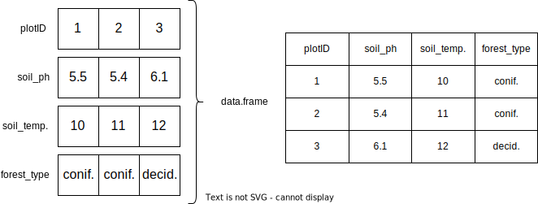

6 Dataframes
From a data science perspective, the most important class of objects is the data frame - J. Chambers M. (2020)
- Dataframes combine multiple vector in a structured format
- Intuitive - most people have seen a spreadsheet before
- Each column is regarded as a vector
- Each vector can have a different data type

Figure 6.1: data.frames are a named list of vectors
df = data.frame(plotID = seq(3),
soil_ph = c(5.5, 5.4, 6.1),
soil_temperature = c(10, 11, 12),
forest_type = c("coniferous", "coniferous", "deciduous"))
df## plotID soil_ph soil_temperature forest_type
## 1 1 5.5 10 coniferous
## 2 2 5.4 11 coniferous
## 3 3 6.1 12 deciduous6.1 CSV Files
Dataframes can be loaded from and saved to .csv files.
- Comma Separated Values
- Caution: In Germany “,” is used as the decimal point. You often find “;” as the delimiter in csvs.
- Caution: If you open csv files in Excel, things can get messy
Datum,Wassertemperatur,pH-Wert,Sauerstoffgehalt
2021-05-31 23:57,17.98,8.05,10.53
2021-06-01 00:09,17.66,8.04,9.64
2021-06-01 00:19,18.03,8.12,11.30
2021-06-01 00:27,18.08,8.14,11.32
2021-06-01 00:39,18.06,8.12,11.06
2021-06-01 00:49,18.01,8.10,10.916.1.1 Reading CSV files
data = read.csv(file = "data/2021-06_aasee.csv", dec = ".", sep = ",")
head(data)## Datum Wassertemperatur pH.Wert Sauerstoffgehalt
## 1 2021-05-31 23:57 17.98 8.05 10.53
## 2 2021-06-01 00:09 17.66 8.04 9.64
## 3 2021-06-01 00:19 18.03 8.12 11.30
## 4 2021-06-01 00:27 18.08 8.14 11.32
## 5 2021-06-01 00:39 18.06 8.12 11.06
## 6 2021-06-01 00:49 18.01 8.10 10.91tail(data)## Datum Wassertemperatur pH.Wert Sauerstoffgehalt
## 4220 2021-06-30 22:57 23.73 8.78 17.80
## 4221 2021-06-30 23:09 23.70 8.72 17.66
## 4222 2021-06-30 23:18 23.68 8.73 17.72
## 4223 2021-06-30 23:29 23.64 8.81 18.38
## 4224 2021-06-30 23:39 23.62 8.76 17.93
## 4225 2021-06-30 23:49 23.63 8.77 17.82str(data)## 'data.frame': 4225 obs. of 4 variables:
## $ Datum : chr "2021-05-31 23:57" "2021-06-01 00:09" "2021-06-01 00:19" "2021-06-01 00:27" ...
## $ Wassertemperatur: num 18 17.7 18 18.1 18.1 ...
## $ pH.Wert : num 8.05 8.04 8.12 8.14 8.12 8.1 8.1 8.1 8.1 8.1 ...
## $ Sauerstoffgehalt: num 10.53 9.64 11.3 11.32 11.06 ...View(data)6.2 TASK: Subsetting dataframes
- Setup a Rstudio Project. Have at least a scripts and a data directory.
- Get the Aasee Dataset into R.
- Try out the following functions:
nrow(),ncol(),summary(),colnames() - Create a new dataframe that only contains observations where the pH is above 8.
- Create a new dataframe that contains exactly the first half of the observations.
Hint: Think of a data.frame as a two-dimensional vector. Subsetting the data.frame therefore requires also two values: one for the row, one for the column.
# row 1, column 2
data[1,2]## [1] 17.98# the first row
data[1,]## Datum Wassertemperatur pH.Wert Sauerstoffgehalt
## 1 2021-05-31 23:57 17.98 8.05 10.53# the first 3 rows, column 3 and 4
data[seq(3), c(3,4)]## pH.Wert Sauerstoffgehalt
## 1 8.05 10.53
## 2 8.04 9.64
## 3 8.12 11.30Individual columns can also be accessed by their name with the $ operator.
# Access by column name
data$Wassertemperatur## [1] 17.98 17.66 18.03 18.08 18.06 18.01 18.02 18.06 18.08 18.08 18.03 17.98 17.93 17.94 17.93 17.91 17.83 17.82 17.78 17.78
## [21] 17.77 17.80 17.81 17.79 17.79 17.80 17.79 17.77 17.75 17.73 17.72 17.70 17.67 17.65 17.62 17.59 17.58 17.55 17.55 17.53
## [41] 17.52 17.45 17.42 17.42 17.40 17.39 17.39 17.39 17.39 17.40 17.38 17.41 17.55 17.69 17.70 17.72 17.65 17.59 17.65 17.57
## [61] 17.68 17.77 17.79 17.82 17.82 17.87 17.88 17.93 17.67 17.49 17.63 17.22 17.53 17.81 17.62 17.24 17.18 17.45 17.45 17.54
## [81] 17.54 17.72 17.82 17.99 18.35 17.84 18.44 18.28 18.80 17.99 17.70 18.40 19.15 18.01 18.31 17.90 18.18 18.53 17.80 18.09
## [101] 17.80 18.26 18.03 18.29 18.05 18.26 17.98 18.97 19.27 18.70 18.29 18.20 18.34 18.24 17.89 18.03 17.79 17.90 18.77 18.15
## [121] 18.21 18.83 18.27 18.14 18.67 17.93 18.16 18.01 18.08 18.28 18.19 18.37 18.36 18.73 18.76 18.66 18.77 18.81 18.73 18.92
## [141] 18.87 18.76 18.79 18.87 18.84 18.89 18.89 18.93 18.95 18.92 18.97 19.00 18.99 19.00 19.00 18.99 19.00 18.98 18.97 18.97
## [161] 18.97 18.97 18.98 18.96 18.94 18.94 18.91 18.90 18.89 18.87 18.85 18.85 18.84 18.83 18.81 18.81 18.81 18.81 18.81 18.80
## [181] 18.79 18.80 18.79 18.79 18.78 18.77 18.78 18.79 18.79 18.79 18.79 18.79 18.79 18.80 18.79 18.81 18.80 18.81 18.81 18.82
## [201] 18.84 18.87 18.89 18.89 18.91 18.96 19.02 19.11 19.15 18.95 18.92 18.84 18.85 18.96 18.92 18.95 18.95 18.91 19.00 19.02
## [221] 19.06 19.05 19.47 19.32 19.05 19.66 19.57 19.23 19.42 19.36 19.66 19.79 19.81 19.99 21.10 21.94 22.52 22.81 22.43 22.16
## [241] 21.55 21.80 21.02 21.85 21.45 22.48 22.73 22.61 22.83 20.85 20.68 19.76 19.81 19.74 19.58 19.35 19.40 19.75 19.76 19.85
## [261] 19.82 19.86 20.08 20.06 19.85 20.04 19.90 19.96 20.12 19.94 20.20 20.17 20.31 20.17 20.37 20.36 20.13 20.15 20.04 19.90
## [281] 19.74 19.60 19.69 19.64 19.74 19.80 20.00 20.12 20.18 20.06 20.04 19.90 19.77 19.59 19.51 19.51 19.50 19.54 19.61 19.61
## [301] 19.59 19.62 19.65 19.77 19.74 19.66 19.59 19.50 19.44 19.40 19.36 19.34 19.37 19.48 19.56 19.58 19.70 19.77 19.85 19.88
## [321] 19.90 19.91 19.85 19.89 19.90 19.88 19.81 19.88 20.01 20.16 20.86 21.04 21.13 21.15 21.21 21.26 21.35 21.51 20.92 21.63
## [341] 21.54 21.51 21.74 21.90 22.02 22.07 22.12 22.06 22.06 22.08 22.29 22.20 22.20 22.22 22.08 22.13 22.16 22.28 22.40 22.42
## [361] 22.40 22.41 22.35 22.42 22.51 22.52 22.67 22.72 22.75 22.73 22.78 22.77 22.81 22.83 22.81 22.87 22.88 22.83 22.68 22.89
## [381] 22.93 22.90 22.96 22.83 23.00 22.95 22.92 22.96 23.04 22.99 22.87 22.89 22.85 22.35 22.50 22.52 22.47 22.41 22.58 22.59
## [401] 22.63 22.61 22.58 22.71 22.69 22.65 22.58 22.60 22.61 22.59 22.56 22.56 22.54 22.54 22.50 22.50 22.47 22.47 22.46 22.44
## [421] 22.44 22.42 22.41 22.38 22.37 22.36 22.34 22.34 22.33 22.33 22.32 22.30 22.30 22.30 22.28 22.26 22.26 22.25 22.26 22.25
## [441] 22.24 22.22 22.21 22.20 22.19 22.17 22.18 22.15 22.15 22.13 22.13 22.12 22.11 22.10 22.10 22.08 22.07 22.06 22.05 22.04
## [461] 22.02 22.02 22.00 22.00 21.99 21.99 21.97 21.88 21.85 21.84 21.79 21.76 21.75 21.75 21.71 21.68 21.66 21.69 21.73 21.74
## [481] 21.79 21.80 21.85 21.82 21.82 21.76 21.69 21.64 21.70 21.62 21.62 21.68 21.62 21.38 21.31 21.37 21.10 21.40 21.64 21.50
## [501] 21.39 21.43 21.62 21.61 21.79 21.81 22.07 21.96 21.92 22.02 21.93 22.21 21.52 21.60 21.96 21.65 21.24 22.44 21.79 21.71
## [521] 21.70 21.46 20.85 21.34 21.25 21.36 21.17 21.24 21.56 21.68 21.71 21.61 21.75 21.59 21.43 21.46 21.25 21.18 21.30 21.26
## [541] 21.35 21.44 21.38 21.44 21.44 21.38 21.46 21.61 21.52 21.24 21.35 21.46 21.42 21.50 21.47 21.49 21.80 22.03 22.21 22.28
## [561] 22.72 23.02 23.05 23.05 23.07 23.04 23.04 23.04 23.02 23.03 23.01 23.00 22.99 22.99 22.99 23.07 23.07 23.04 23.05 23.05
## [581] 23.05 23.04 23.04 23.03 23.03 23.01 23.01 23.00 23.01 22.99 23.01 23.01 23.01 22.97 22.98 22.98 22.99 22.98 22.98 22.98
## [601] 22.98 22.98 22.98 22.98 22.99 22.99 23.00 23.01 23.01 23.02 23.04 23.07 23.04 23.05 23.01 23.07 23.06 23.02 23.03 23.02
## [621] 23.04 23.07 22.99 22.99 23.04 23.11 23.15 23.23 23.18 23.30 23.27 23.26 23.27 23.24 23.24 23.31 23.24 23.32 23.31 23.30
## [641] 23.34 23.39 23.24 23.35 23.32 23.38 23.38 23.35 23.37 23.35 23.46 23.56 23.35 23.53 23.45 23.47 23.50 23.56 23.55 23.61
## [661] 23.64 23.59 23.62 23.62 23.59 23.59 23.73 23.70 23.65 23.67 23.74 23.71 23.74 23.71 23.71 23.70 23.73 23.72 23.71 23.71
## [681] 23.66 23.71 23.70 23.70 23.69 23.67 23.64 23.61 23.59 23.58 23.54 23.53 23.50 23.48 23.47 23.44 23.44 23.44 23.41 23.39
## [701] 23.38 23.36 23.35 23.34 23.31 23.27 23.24 23.21 23.19 23.13 23.12 23.12 23.10 23.09 23.08 23.05 23.07 23.04 23.01 22.97
## [721] 22.96 22.95 22.92 22.91 22.89 22.84 22.78 22.77 22.73 22.71 22.69 22.65 22.61 22.61 22.59 22.56 22.56 22.54 22.54 22.52
## [741] 22.51 22.50 22.50 22.48 22.46 22.46 22.44 22.42 22.41 22.40 22.39 22.36 22.34 22.30 22.29 22.27 22.26 22.24 22.22 22.21
## [761] 22.20 22.17 22.17 22.16 22.16 22.16 22.13 22.13 22.13 22.11 22.12 22.11 22.10 22.11 22.09 22.09 22.08 22.08 22.08 22.10
## [781] 22.09 22.10 22.13 22.11 22.10 22.11 22.13 22.13 22.14 22.16 22.18 22.18 22.21 22.22 22.19 22.13 22.16 22.22 22.17 22.18
## [801] 22.21 22.16 22.20 22.18 22.21 22.17 22.13 22.14 22.13 22.13 22.13 22.11 22.10 22.07 22.08 22.08 22.07 22.07 22.07 22.08
## [821] 22.04 22.04 22.00 22.00 21.99 21.96 21.94 21.93 21.92 21.90 21.89 21.86 21.85 21.85 21.83 21.80 21.78 21.78 21.74 21.75
## [841] 21.72 21.71 21.71 21.69 21.66 21.64 21.62 21.62 21.57 21.57 21.55 21.55 21.53 21.50 21.48 21.46 21.45 21.43 21.40 21.39
## [861] 21.38 21.38 21.34 21.33 21.29 21.29 21.27 21.27 21.24 21.23 21.19 21.19 21.19 21.17 21.16 21.14 21.07 21.04 21.05 21.06
## [881] 20.99 21.05 21.02 21.03 21.02 20.99 21.00 20.99 20.97 20.97 20.94 20.90 20.92 20.89 20.89 20.89 20.88 20.88 20.85 20.85
## [901] 20.85 20.84 20.84 20.88 20.88 20.85 20.80 20.87 20.85 20.91 20.89 20.88 20.92 20.91 20.88 20.91 20.95 20.91 20.88 20.91
## [921] 20.90 20.94 20.93 20.91 20.93 20.98 20.92 21.02 21.01 20.96 20.96 21.04 21.10 21.07 21.04 21.14 21.10 21.18 21.06 21.07
## [941] 21.07 21.04 20.92 20.75 21.13 20.69 20.88 21.02 21.03 21.03 20.86 20.93 20.86 20.79 20.78 20.83 20.76 20.80 20.78 20.74
## [961] 20.74 20.80 20.82 20.74 20.75 20.80 20.85 20.75 20.75 20.83 20.85 20.88 20.88 20.98 20.87 20.89 20.77 20.80 20.75 20.74
## [981] 20.72 20.69 20.67 20.67 20.72 20.71 20.70 20.69 20.72 20.73 20.77 20.77 20.77 20.80 20.80 20.78 20.77 20.77 20.75 20.76
## [ reached getOption("max.print") -- omitted 3225 entries ]New columns can also be created with $.
# Assign the same value to each row
data$newcolumn1 = "valid"
# Works, because 4225 rows are a multiple of 5.
data$newcolumn2 = seq(5)
# Won't work because the vector of length 2 does not fit exactly into 4225.
data$newcolumn3 = c(2,4)## Error in `$<-.data.frame`(`*tmp*`, newcolumn3, value = c(2, 4)): replacement has 2 rows, data has 4225data$t_kelvin = data$Wassertemperatur + 273.15
data$index = seq(nrow(data))
head(data)## Datum Wassertemperatur pH.Wert Sauerstoffgehalt newcolumn1 newcolumn2 t_kelvin index
## 1 2021-05-31 23:57 17.98 8.05 10.53 valid 1 291.13 1
## 2 2021-06-01 00:09 17.66 8.04 9.64 valid 2 290.81 2
## 3 2021-06-01 00:19 18.03 8.12 11.30 valid 3 291.18 3
## 4 2021-06-01 00:27 18.08 8.14 11.32 valid 4 291.23 4
## 5 2021-06-01 00:39 18.06 8.12 11.06 valid 5 291.21 5
## 6 2021-06-01 00:49 18.01 8.10 10.91 valid 1 291.16 6tail(data)## Datum Wassertemperatur pH.Wert Sauerstoffgehalt newcolumn1 newcolumn2 t_kelvin index
## 4220 2021-06-30 22:57 23.73 8.78 17.80 valid 5 296.88 4220
## 4221 2021-06-30 23:09 23.70 8.72 17.66 valid 1 296.85 4221
## 4222 2021-06-30 23:18 23.68 8.73 17.72 valid 2 296.83 4222
## 4223 2021-06-30 23:29 23.64 8.81 18.38 valid 3 296.79 4223
## 4224 2021-06-30 23:39 23.62 8.76 17.93 valid 4 296.77 4224
## 4225 2021-06-30 23:49 23.63 8.77 17.82 valid 5 296.78 4225References
Chambers, John, M. 2020. “S, R, and Data Science.” The R Journal 12 (1): 462. https://doi.org/10.32614/RJ-2020-028.